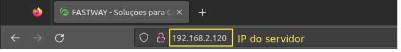

Para acessar o FastDialer, utilize um navegador de sua preferência e digite o IP do servidor na barra de URL (barra de endereço). No exemplo abaixo, acessaremos um servidor que está no endereço 192.168.2.120:
Logo após você verá uma tela para fazer logon no sistema, que é composta por 4 itens: